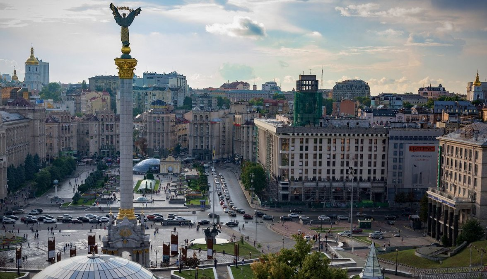

Дата та місце народження: 10 травня 2003р. м. Дубно
Освіта:
Дубенська ЗОШ I-III ст. №1;
Дубенська гімназія №2;
НТУУ "КПІ", м. Київ
Хобі:
Улюблені фільми:
Київ — столиця України, одне з найбільших і найстаріших міст Європи. Розташований у середній течії Дніпра, у північній Наддніпрянщині. Політичний, соціально-економічний, транспортний та освітньо-науковий центр країни. За легендою «Повісті врем'янних літ», Київ було засновано легендарним полянським князем Києм разом із братами Щеком і Хоривом, і сестрою Либідь. Літопис не має дати заснування міста. Археологічні та писемні джерела свідчать, що Київ розвинувся на основі язичницького поселення кінця 5—початку 6 століття.
